“唯一需要恐惧的是恐惧本身。”这句话是一个愚蠢的建议。
你不必去囤积厕纸，不过如果防疫政策的制定者恐惧的是恐惧本身，他们会弱化局势的危险性，以避免大规模恐慌。恐惧本身并不是问题，问题是在恐惧之中，我们需要做什么。恐惧为我们提供直面危险的动力，同时为以后的危险情况做准备。
我们（指作者）对此表示非常担忧，我们觉得你也是这样。由于这种恐惧的存在，我们制作了这些可交互的疫情模拟器，因此你 能在这种恐惧之中了解到你面对的是什么。
- 在这之前的几个月 （流行病学基础、SEIR 模型、R 与 R0）
- 接下来的几个月 （封闭式隔离、接触者追踪、口罩）
- 接下来的几年 （失去免疫力？没有疫苗？）
这篇在 2020 年 5 月 1 日的文章（点击此处查看脚注！→1）将给你希望，同时还会给你带来恐惧。 要以低成本和低附带损伤的方式战胜新冠疫情，要以乐观的态度制定防疫计划，同时以悲观的态度制定应对危急情况的备用防疫计划。Gladys Bronwyn Stern 曾说过：“乐观者造飞机，悲观者造降落伞。”
准备进入深水区，会有颠簸，请系好安全带。

飞行员用模拟机进行学习，学着不让飞机坠毁。
流行病学专家通过疫情模拟器，在疫情中保护人类。
首先做一个极为简单粗暴的疫情模拟器！在这个模拟器中，
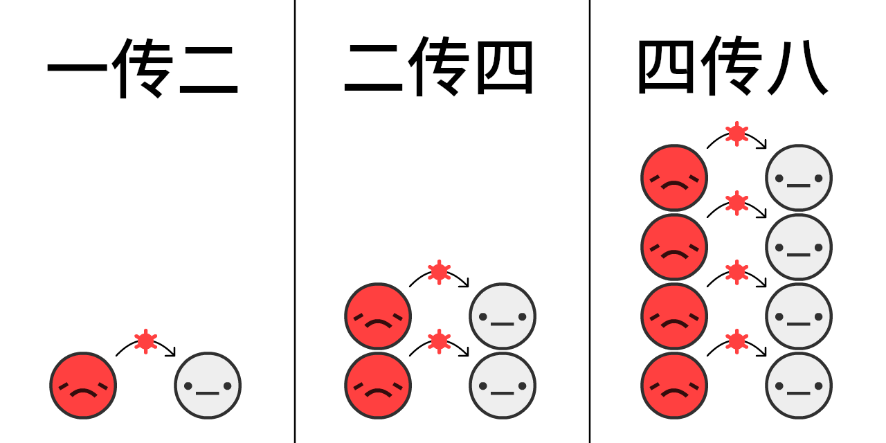
根据早期的估计，在疫情 刚刚开始 的时候，病毒从一个
如果在模拟中，感染人数每 4 天翻一倍，不进行干预的话，如果 0.001% 的人口是
点击“开始”启动模拟！模拟完成后你可以调整参数，再次进行模拟： （技术细节：3）
这就是指数增长曲线。一开始很小，然后是爆炸性增长。从“这只是流感”到“大城市不会在流感中出现万人坑” 。
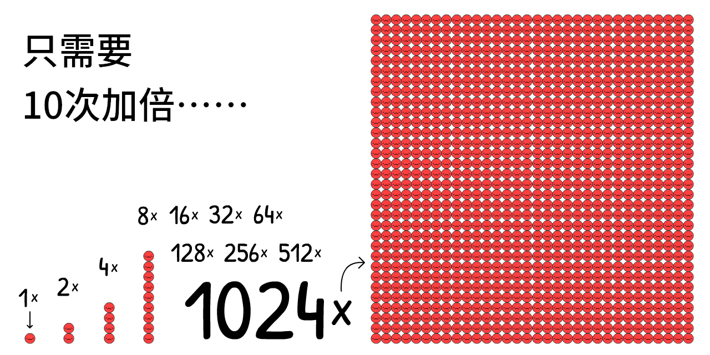
然而，这个模拟是错误的。谢天谢地，不存在永远的指数增长。如果别人都 已经 感染了病毒，病毒不会传播：
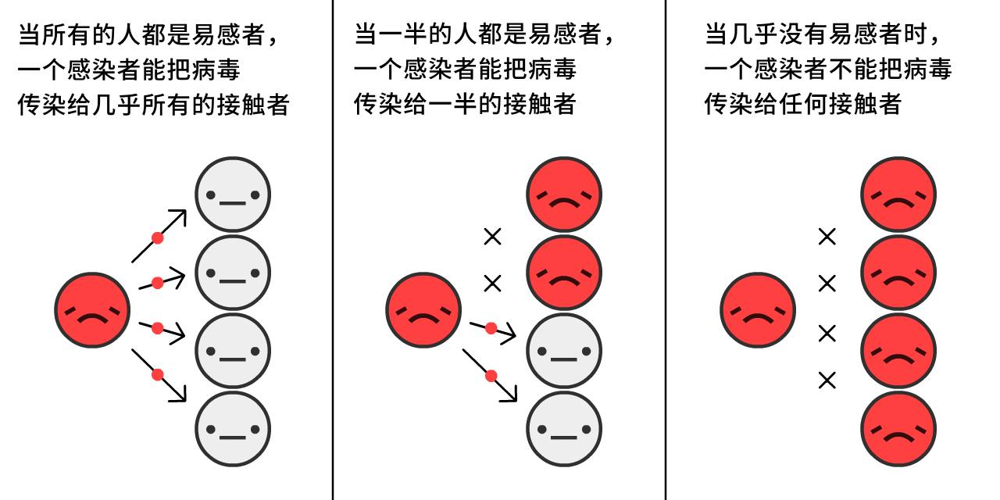
当存在越多的
考虑到这种情况，疫情的发展会发生什么变化？一起来看看吧：
这是 S 形的逻辑斯蒂 (logistic) 增长曲线。一开始很小，然后爆炸性增长，最后增速变慢。
然而，这个模拟 还是 错的。我们忽略了这个事实：
为了简化，假设所有的
在这次新冠疫情中，平均而言 如果你在这 10 天内具有
这是指数增长的反面：指数衰减曲线。
现在，如果将 S 形的逻辑斯蒂增长曲线，和 恢复者的曲线这两者结合，进行模拟，会发生什么？
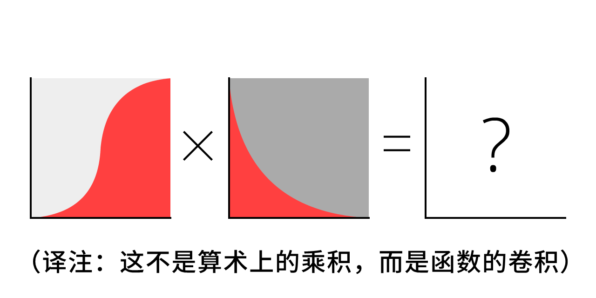
一起来看看吧。
红色曲线 是 目前的 病例数
灰色曲线 是 所有的 病例数（目前病例数再加上恢复
那条著名的曲线就来自这里！既不是钟形曲线，也不是对数正态分布曲线（译注：假设随机变量 X 的对数 log(X) 服从正态分布，那么随机变量 X 服从对数正态分布）。这条曲线连个正式的名字都没有，然而你多次看到这条曲线。这就是需要“压平”的曲线。
这是 SIR 模型,5
这是在流行病学的基础理论中 第二 重要的内容：
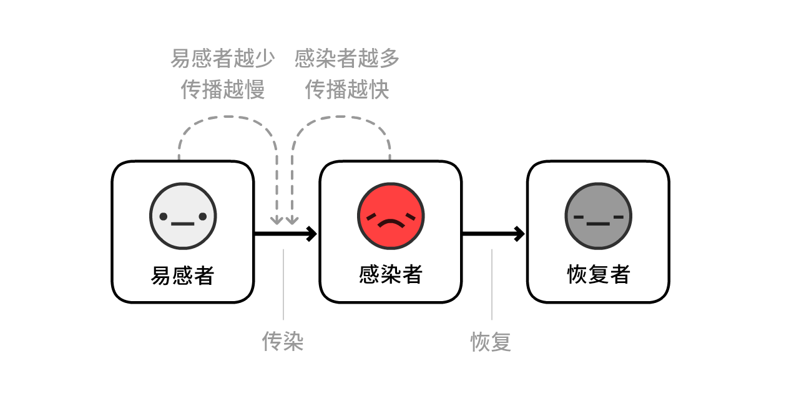
注意：从这些模拟中可以看出，实际的防疫政策 远远 比这些模型还要复杂得多！ 尽管 SIR 模型忽略了其他的影响因素，但它仍然能解释一些被广泛承认的发现。
根据实际情况，加上一个影响因素：在一个
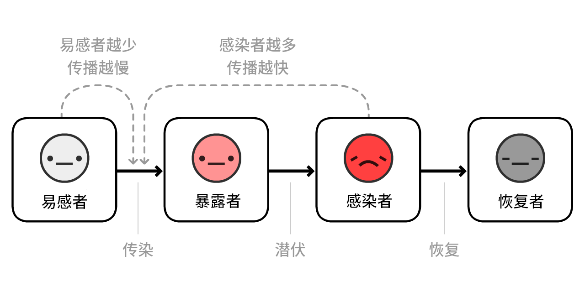
（这一变种被称为 SEIR 模型6，E 表示
据估计，新冠病毒具有 平均 3 天的
红色加粉色曲线 是 目前的 病例数（感染者
灰色曲线 是 所有的 病例数（目前病例数再加上恢复者
好像没多大变化呢！
为什么呢？这就是流行病学的基础理论中 最重要 的内容：

它是“传染数（reproduction number）”的缩写。它是一个
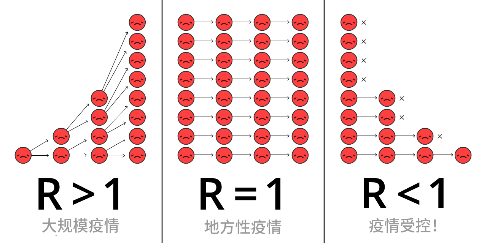
在疫情中，R 会发生变化，同时我们会制定更多的防疫措施，获得更强的免疫力。
基本传染数 R0 （读作 R-nought, “阿诺特”，当然读成 R-zero 或者“阿零”也行）是疫情 开始 时 R 的值，那时我们尚未制定防疫措施，也不具有免疫力。R0 更多表示的是病毒的传播能力，这个值还与地区有关。举个例子，在人口密度较高的城市地区，R0 的值大于人口密度较低的乡村地区。
（很多新发表的文章和论文把 R 和 R0 混淆。再说一次，科技术语实在是太糟了。）
季节性流感的 R0 大约为 1.288. 这表示，在流感季节的 开端 ，每个
据估计，新冠病毒的 R0 大约为 2.2, 9 一个 尚未完成 的研究表明，新冠病毒在武汉的 R0 是 5.710
在我们的模拟中， 疫情开始时 每个
尝试一下这个 R0 计算器，看看 R0 如何随着恢复时间和感染时间的变化而变化：
请记住，
当有足够的人具有免疫力之后，R < 1, 疫情就已经得到了控制！这被称为群体免疫。举个例子，通过疫苗 能获得针对流感的群体免疫。让人们通过感染病毒，达成群体免疫的想法，实在是太糟糕了。（这并不像你想的那样，接下来我们将会解释这是为什么。）
再进行一次 SEIR 模型的模拟，但这次展示了 R0 和 R 的值随着时间的变化，以及达成群体免疫的阈值：
注意：在达成群体免疫之后，总病例数 不会停止增长 ，而是会超过这个阈值！ 当目前的病例数达到峰值时，总病例数 恰好 超过这个阈值。（试试看吧！不管你如何调整参数，这一结论始终成立）
这是因为，当非
如果这是你从这篇文章中唯一学到的东西，那么这张图就是：这是一张极为复杂的图片，你需要花点时间来完全消化它：
这意味着：我们不需要阻断所有的传播途径，来阻止新冠疫情！
这其实是个悖论。新冠病毒的传染性极强，我们尚未能阻止新冠疫情。要阻止新冠疫情，需要阻断至少 60% 的传播。60%?! 如果这是在学校的等级评定，这将会得到一个D-. 如果 R0 = 2.5, 阻断 61% 的传播之后能达到 R = 0.975，可以达成 R < 1 的目标，疫情得到了控制！（准确的公式：12）
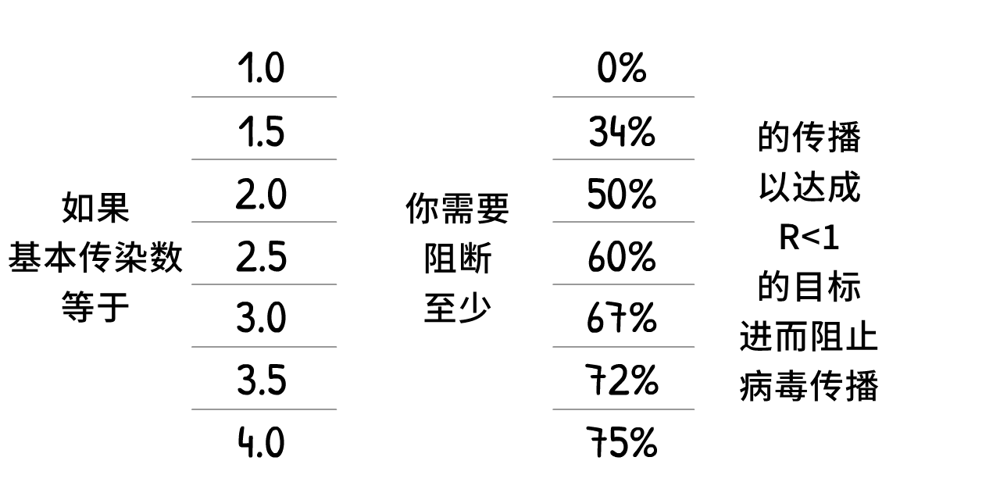
（如果你觉得 R0 或者其他的数值太高或者太低，很好，你正在挑战我们的假设！在这篇文章的最后会有一个“沙盘模式”，你可以在那里输入 你自己 的数值进行模拟，看看会发生什么。）
所有 的防疫措施，包括但不限于：洗手、提高人与人的间距、进行网络社交、封闭式隔离、自我隔离、接触者追踪、隔离现有病例、戴口罩、群体免疫，所有 的措施就是为了：
达成 R < 1 的目标。
接下来，我们将使用“疫情模拟器”，解答这个问题：如何达成 R < 1 的目标？这需要在保护我们的心理健康的同时，还要 保住我们的钱袋子。
飞机即将进行紧急迫降，请做好并保持防冲击姿势。
情况可能会变得更糟。我们需要避免这种只会在平行宇宙中出现的情况发生：
情况 0: 什么都不做
在新冠病毒的感染者中，大约有 1/20 的人需要进 ICU （重症监护室）。13 在一个像美国那样的发达国家之中，每 3400 人拥有 1 个 ICU 床位。14 因此，美国能 同时 处理 20/3400 的感染者，也就是 0.6% 的人口。
即使我们把 ICU 的床位增加 3倍以上， 也就是 2% 的人口，如果什么都不做的话，接下来会发生的是：
大事不妙。
这篇帝国理工学院在 2020 年 3 月 16 日的报告表明：如果什么都不做的话，ICU 的床位将会用尽，大于 80% 的人口被感染。（正如在前面提到的那样，病例的总数会超过群体免疫的阈值）
假设当 ICU 的床位数量用尽时，0.5% 的感染者会死去，15 这一假设针对像美国一样的国家还算宽松。如果什么都不做的话， 拥有 3 亿人口的美国，3 亿人口中的 80% 之中的 0.5%, 死亡人数那可是 120 万……
（很多的新闻媒体和自媒体只报道了“80% 的感染者”，并没有 强调“如果什么都不做”。此时恐惧化为点击量，而不是针对目前局势的理解。嗨呀。）
情况 1：压平曲线或群体免疫
每个公共卫生机构都在鼓吹“压平曲线”的理论，然而英国人原始的“群体免疫”计划遭到全方位的抨击。这两个其实是 同样的防疫计划。 英国人只是用了一种糟糕的手段说出他们的计划。16
这两种计划都有一个字面意义上的致命缺陷：
首先，看一下“压平曲线”的两种主要方法：勤洗手，同时增加人与人的间距。
提高洗手频率能使富有国家中流感和感冒的病例数量降低约 25% 17, 伦敦的“全境封锁”将人与人的接触频率降低约 70% 18. 因此，假设洗手能让 R 的值降低 至多 25%, 同时人与人的间距增加，R 的值因此降低 至多 70%:
尝试一下这个计算器，看一下非
模拟表明，在 2020 年 3 月新冠疫情开始时（译注：全球范围的新冠疫情始于 2020 年 3 月，中国大陆境内新冠疫情的大规模爆发始于 2020 年 1 月），增加洗手频率，同时人与人的间距增加 少许 ，R 的值得以降低，但还是大于 1:
三条注释：
这能 降低 受感染的人数！即使没达到 R < 1 的目标，降低 R 的值仍然能挽救生命，同时降低受感染的人数（非易感人群的数量）与群体免疫阈值之间的差值。大众会觉得“压平曲线”的计划只会使病例在时间上更为分散，并不会降低病例总数。这在 任何 一种流行病学的基本模型中是不会出现的。然而某些跑得快的媒体说“出现 80% 的感染者是不可避免的”，大众会认为，无论如何，受感染的人数是不变的。嗨呀。
由于采取了这些强化的防疫措施，目前病例数在达成群体免疫 之前 达到峰值。在这个模拟中，受感染的人数实际上 略微 超过达成群体免疫的峰值，而这就是英国人的计划！此时 R < 1, 然后恢复到疫情之前的生活，疫情因此始终得到了控制 ！然而，还有一个问题……
ICU 床位不足的情况将会持续好几个月。（别忘了，在这些模拟之中，ICU 的床位数 已经是 原来的三倍）
这就是皇家理工学院在 2020 年 3 月 16 日的报告中提到的内容，英国人因此放弃了原始的“群体免疫”计划。所有缓解疫情（降低 R 的值，但是 R > 1）的计划终将失败。唯一成功的计划是遏制疫情（降低 R 的值，直到 R < 1）。
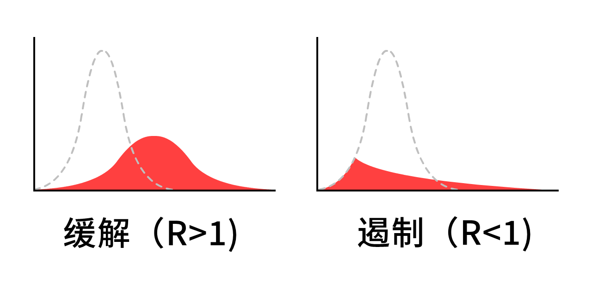
这说明，不要“压平”曲线，要 “碾压” 曲线。举个粒子，来一次持续数月的封闭式隔离……
情况 2: 持续数月的封闭式隔离
如果先来一次 5 个月的封闭式隔离，以 “碾压” 曲线，将
天哪。
这就是人人关注的“第二波疫情”。解封之后， R 的值再次大于 1, 只要有一个漏网之
封闭式隔离不是解药，而是一次重启。
所以，再来一次封闭式隔离，会发生什么？
情况 3: 间歇性的封闭式隔离
这种方案首次由帝国理工学院在 2020 年 3 月 16 日的报告中提出，随后一篇哈佛大学的论文中再次提出这个方案。20
下面是这种情况的模拟： （在“预设场景”模拟完成之后，你可以模拟 你的 封锁计划。你可以在进行模拟的 同时 拖动滑动条，来调整各项参数！你可以随时暂停模拟、继续模拟、调整模拟速度）
这 也许 能让现有病例数始终低于 ICU 的容量！同时这比在疫苗问世之前进行一次 18 个月的“全境封锁” 好多了。只需要……在几个月的封锁和几个月的开放之间反复横跳。（如果没有疫苗的话，不断反复横跳，直到在 2022 年达成群体免疫。）
画一条表示 ICU 的容量的线很简单，然而有很多重要的东西是 c无法 在这里模拟的，例如：
心理健康： 孤独是导致抑郁、焦虑和自杀的最大风险因素之一。孤独造成寿命缩短的程度，相当于每天抽 15 根烟。21
资金压力： 比起生命，“经济学”只会关心钱，不过经济不只是钱：它更是人们为所爱之人提供食物和住所，为下一代的未来进行投资，享用艺术、食物和游戏等这些让人生更值得的东西。同时，贫穷 本身 会对身心健康造成负面影响。
这并不是说 不应该 进行封闭式隔离！我们将会针对“全境封锁”进行讨论。这仍然不是最理想的防疫计划。
等等，（到原文发布时为止——译注）中国台湾地区和韩国不是 已经 控制住新冠疫情了吗？他们只用了整整 4 个月，没有实施 长期的封闭式隔离？
他们是怎么做到的？
情况 4: 核酸检测、接触者追踪、进行隔离
“当然，我们（指西方国家）也可以做到像中国台湾地区和韩国在疫情开始的时候一样，但这已经太晚了。我们已经错过了在疫情开始时压制疫情的机会。”
但是这就是关键！“封闭式隔离不是解药，而是一次重启。” 我们（指西方国家）正需要一次重启。
要理解中国台湾地区和韩国是如何控制住新冠疫情的，需要理解感染新冠病毒之后会发生什么：22:
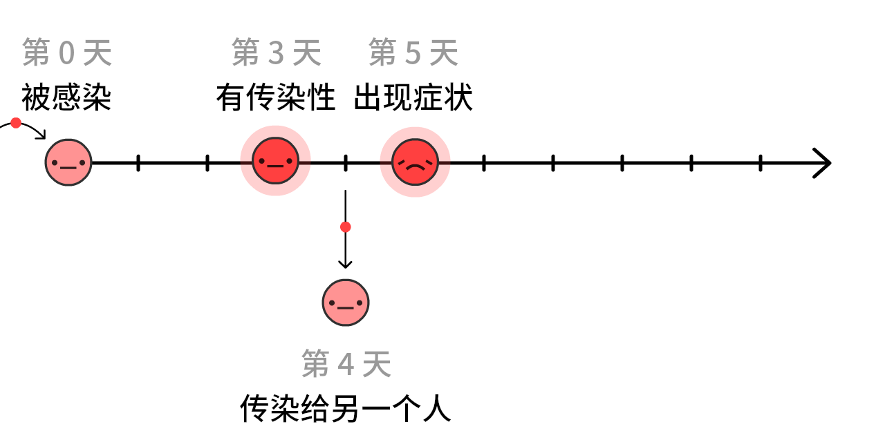
If cases only self-isolate when they know they're sick (that is, they feel symptoms), the virus can still spread:
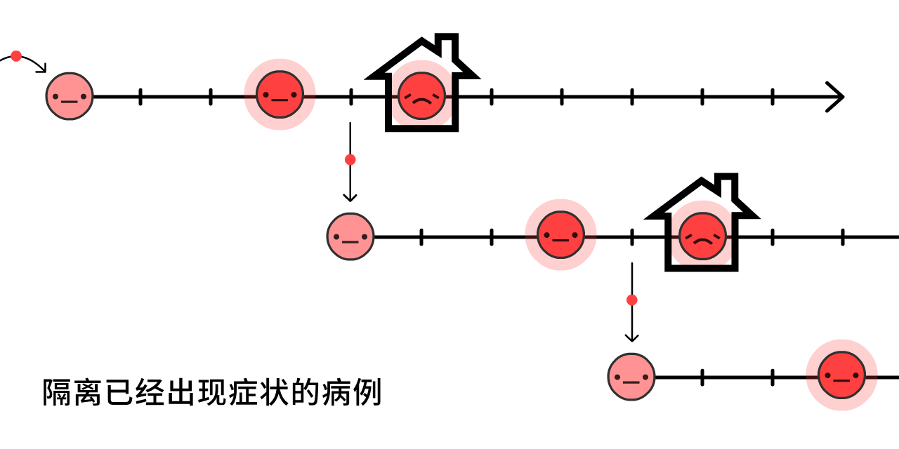
And in fact, 44% of all transmissions are like this: pre-symptomatic! 23
But, if we find and quarantine a symptomatic case's recent close contacts... we stop the spread, by staying one step ahead!
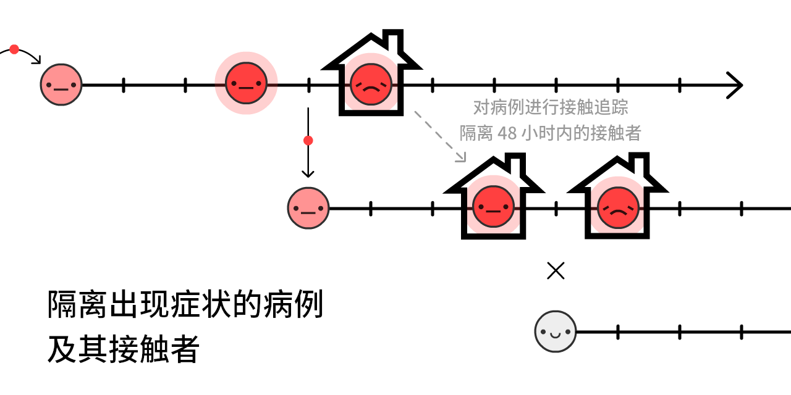
这种方法叫接触者追踪。这是一个在遏制埃博拉病毒的过程中以史无前例的规模使用的老方法24, 如今这正是中国台湾地区和韩国控制住新冠疫情的方法！（译注：这种方法也在中国大陆广泛使用。）
(It also lets us use our limited tests more efficiently, to find pre-symptomatic
Traditionally, contacts are found with in-person interviews, but those alone are too slow for COVID-19's ~48 hour window. That's why contact tracers need help, and be supported by – NOT replaced by – contact tracing apps.
(This idea didn't come from "techies": using an app to fight COVID-19 was first proposed by a team of Oxford epidemiologists.)
Wait, apps that trace who you've been in contact with?... Does that mean giving up privacy, giving in to Big Brother?
Heck no! DP-3T, a team of epidemiologists & cryptographers (including one of us, Marcel Salathé) is already making a contact tracing app – with code available to the public – that reveals no info about your identity, location, who your contacts are, or even how many contacts you've had.
Here's how it works:
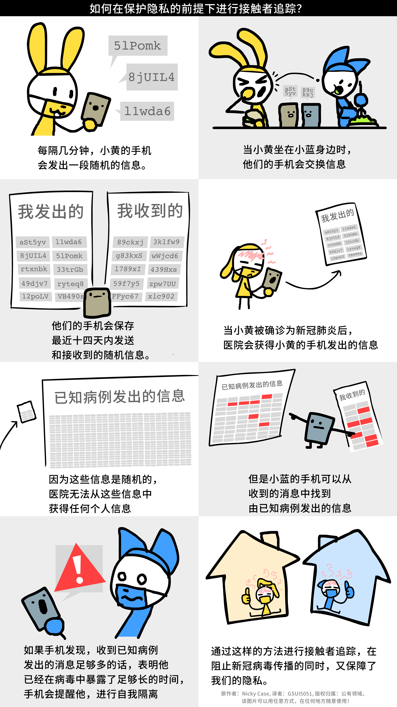
（点击查看完整版漫画。关于“恶作剧”、假阳性等技术细节，在脚注中会详细说明，点击查看脚注：25)
Along with similar teams like TCN Protocol26 and MIT PACT27, they've inspired Apple & Google to bake privacy-first contact tracing directly into Android/iOS.28 (Don't trust Google/Apple? Good! The beauty of this system is it doesn't need trust!) Soon, your local public health agency may ask you to download an app. If it's privacy-first with publicly-available code, please do!
But what about folks without smartphones? Or infections through doorknobs? Or "true" asymptomatic cases? Contact tracing apps can't catch all transmissions... and that's okay! We don't need to catch all transmissions, just 60%+ to get R < 1.
(Footnote rant about the confusion between pre-symptomatic vs "true" asymptomatic – "true" asymptomatics are rare:29)
Isolating symptomatic cases would reduce R by up to 40%, and quarantining their pre/a-symptomatic contacts would reduce R by up to 50%30:
Thus, even without 100% contact quarantining, we can get R < 1 without a lockdown! Much better for our mental & financial health. (As for the cost to folks who have to self-isolate/quarantine, governments should support them – pay for the tests, job protection, subsidized paid leave, etc. Still way cheaper than intermittent lockdown.)
We then keep R < 1 until we have a vaccine, which turns susceptible
(Note: this calculator pretends the vaccines are 100% effective. Just remember that in reality, you'd have to compensate by vaccinating more than "herd immunity", to actually get herd immunity)
Okay, enough talk. Here's a simulation of:
- A few-month lockdown, until we can...
- Switch to "Test, Trace, Isolate" until we can...
- Vaccinate enough people, which means...
- We win.
So that's it! That's how we make an emergency landing on this plane.
That's how we beat COVID-19.
...
But what if things still go wrong? Things have gone horribly wrong already. That's fear, and that's good! Fear gives us energy to create backup plans.
The pessimist invents the parachute.
情况 4+: 所有人都戴口罩、夏天、“全境封锁”
What if R0 is way higher than we thought, and the above interventions, even with mild distancing, still aren't enough to get R < 1?
Remember, even if we can't get R < 1, reducing R still reduces the "overshoot" in total cases, thus saving lives. But still, R < 1 is the ideal, so here's a few other ways to reduce R:
Masks For All:
"Wait," you might ask, "I thought face masks don't stop you from getting sick?"
You're right. Masks don't stop you from getting sick31... they stop you from getting others sick.
But wait – how can a simple piece of fabric block droplets in one direction, but not the other? The answer's counter-intuitive, yet simple:
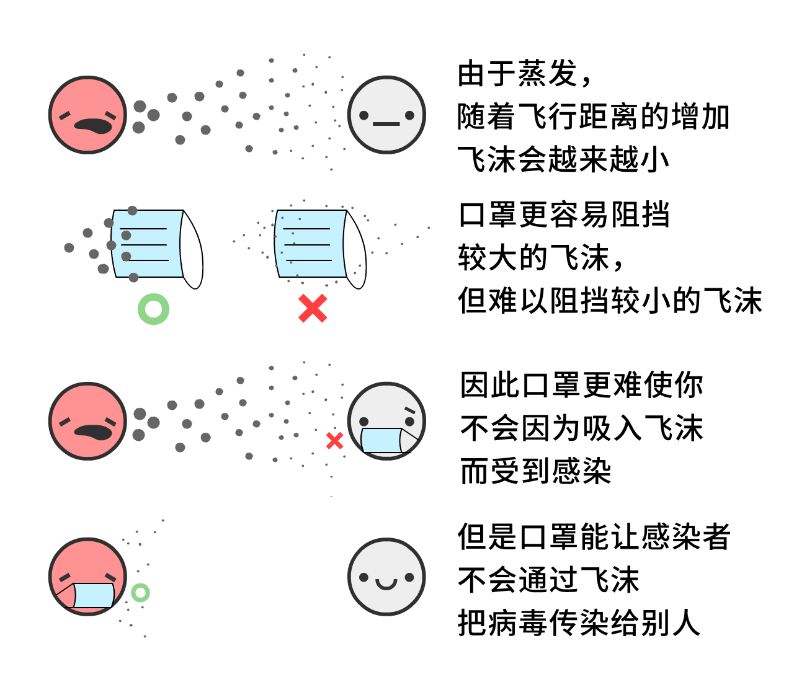
Surgical masks on the infectious person reduce cold & flu viruses in aerosols by 70%32 – that's potentially as large an impact as a lockdown!
However, we don't know for sure the impact of masks on COVID-19 specifically. In science, one should only publish a finding if you're 95% sure of it. (...should.33) Masks, as of May 1st 2020, are less than "95% sure".
However, pandemics are like poker. Make bets only when you're 95% sure, and you'll lose everything at stake. As a recent article on masks in the British Medical Journal notes,34 we have to make cost/benefit analyses under uncertainty. Like so:
Cost: If homemade cloth masks (which are ~2/3 as effective as surgical masks35), super cheap. If surgical masks, more expensive but still pretty cheap.
Benefit: Even if it's a 50–50 chance of surgical masks reducing transmission by 0% or 70%, the average "expected value" is still 35%, same as a half-lockdown! So let's guess-timate that surgical masks reduce R by up to 35%, discounted for our uncertainty. (Again, you can challenge our assumptions by turning the sliders up/down)
(other arguments for/against masks:36)
Masks alone won't get R < 1. But if handwashing & "Test, Trace, Isolate" only gets us to R = 1.10, having just 1/3 of people wear masks would tip that over to R < 1, virus contained!
Summer:
Okay, this isn't an "intervention" we can control, but it will help! Some news outlets report that summer won't do anything to COVID-19. They're half right: summer won't get R < 1, but it will reduce R.
For COVID-19, every extra 1° Celsius (1.8° Fahrenheit) makes R drop by 1.2%.37 The summer-winter difference in New York City is 26°C (47°F),38 so summer will make R drop by ~31%.
Summer alone won't make R < 1, but if we have limited resources, we can scale back some interventions in the summer – so we can scale them higher in the winter.
A "Circuit Breaker" Lockdown:
And if all that still isn't enough to get R < 1... we can do another lockdown.
But we wouldn't have to be 2-months-closed / 1-month-open over & over! Because R is reduced, we'd only need one or two more "circuit breaker" lockdowns before a vaccine is available. (Singapore had to do this recently, "despite" having controlled COVID-19 for 4 months. That's not failure: this is what success takes.)
Here's a simulation of a "lazy case" scenario:
- Lockdown, then
- A moderate amount of hygiene & "Test, Trace, Isolate", with a mild amount of "Masks For All", then...
- One more "circuit breaker" lockdown before a vaccine's found.
Not to mention all the other interventions we could do, to further push R down:
- Travel restrictions/quarantines
- Temperature checks at malls & schools
- Deep-cleaning public spaces
- Replacing hand-shaking with foot-bumping
- And all else human ingenuity shall bring
. . .
We hope these plans give you hope.
Even under a pessimistic scenario, it is possible to beat COVID-19, while protecting our mental and financial health. Use the lockdown as a "reset button", keep R < 1 with case isolation + privacy-protecting contact tracing + at least cloth masks for all... and life can get back to a normal-ish!
Sure, you may have dried-out hands. But you'll get to invite a date out to a comics bookstore! You'll get to go out with friends to watch the latest Hollywood cash-grab. You'll get to people-watch at a library, taking joy in people going about the simple business of being alive.
Even under the worst-case scenario... life perseveres.
So now, let's plan for some worse worst-case scenarios. Water landing, get your life jacket, and please follow the lights to the emergency exits:
You get COVID-19, and recover. Or you get the COVID-19 vaccine. Either way, you're now immune...
...for how long?
- COVID-19 is most closely related to SARS, which gave its survivors 2 years of immunity.39
- The coronaviruses that cause "the" common cold give you 8 months of immunity.40
- There's reports of folks recovering from COVID-19, then testing positive again, but it's unclear if these are false positives.41
- One not-yet-peer-reviewed study on monkeys showed immunity to the COVID-19 coronavirus for at least 28 days.42
But for COVID-19 in humans, as of May 1st 2020, "how long" is the big unknown.
For these simulations, let's say it's 1 year.
Here's a simulation starting with 100%
Return of the exponential decay!
This is the SEIRS Model. The final "S" stands for
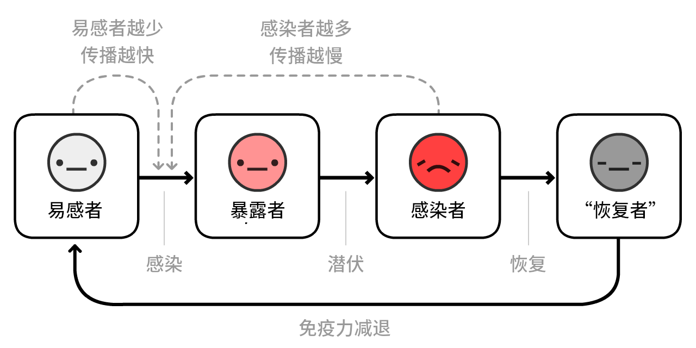
Now, let's simulate a COVID-19 outbreak, over 10 years, with no interventions... if immunity only lasts a year:
In previous simulations, we only had one ICU-overwhelming spike. Now, we have several, and
R = 1, it's endemic.
Thankfully, because summer reduces R, it'll make the situation better:
Oh.
Counterintuitively, summer makes the spikes worse and regular! This is because summer reduces new
Thankfully, the solution to this is pretty straightforward – just vaccinate people every fall/winter, like we do with flu shots:
(After playing the recording, try simulating your own vaccination campaigns! Remember you can pause/continue the sim at any time)
But here's the scarier question:
What if there's no vaccine for years? Or ever?
To be clear: this is unlikely. Most epidemiologists expect a vaccine in 1 to 2 years. Sure, there's never been a vaccine for any of the other coronaviruses before, but that's because SARS was eradicated quickly, and "the" common cold wasn't worth the investment.
Still, infectious disease researchers have expressed worries: What if we can't make enough?43 What if we rush it, and it's not safe?44
Even in the nightmare "no-vaccine" scenario, we still have 3 ways out. From most to least terrible:
1) Do intermittent or loose R < 1 interventions, to reach "natural herd immunity". (Warning: this will result in many deaths & damaged lungs. And won't work if immunity doesn't last.)
2) Do the R < 1 interventions forever. Contact tracing & wearing masks just becomes a new norm in the post-COVID-19 world, like how STI tests & wearing condoms became a new norm in the post-HIV world.
3) Do the R < 1 interventions until we develop treatments that make COVID-19 way, way less likely to need critical care. (Which we should be doing anyway!) Reducing ICU use by 10x is the same as increasing our ICU capacity by 10x:
Here's a simulation of no lasting immunity, no vaccine, and not even any interventions – just slowly increasing capacity to survive the long-term spikes:
Even under the worst worst-case scenario... life perseveres.
. . .
Maybe you'd like to challenge our assumptions, and try different R0's or numbers. Or try simulating your own combination of intervention plans!
Here's an (optional) Sandbox Mode, with everything available. (scroll to see all controls) Simulate & play around to your heart's content:
这个“疫情模拟器”让我们受益匪浅，它告诉我们之前的几个月发生了什么，接下来的几个月和接下来的几年将会发生什么。
最后，让我们回到
飞机已经在迫降中损毁，我们挤上了救生筏，该是找陆地的时候了。45
流行病学专家和政策制定者们（右派, 左派，以及 多党派人士）针对如何在保护我们的生命 和 人身自由的同时，在抗击新冠疫情上已经达成共识。
这是一个简单粗暴的防疫政策，然而针对某些备用方案，尚未达成共识：
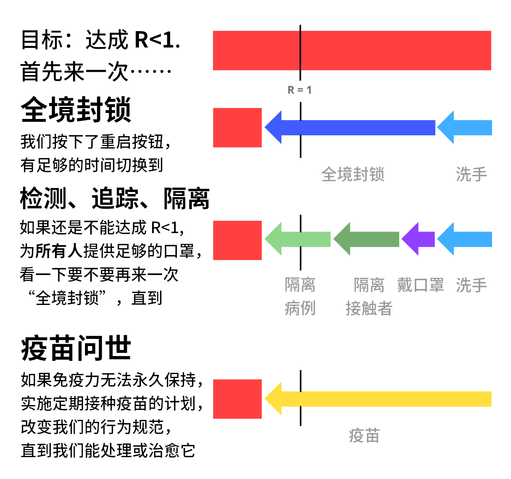
如果是你的话，你需要怎么做？
个人层面： 尊重封闭式隔离政策，尽快度过第 1 阶段，勤洗手，戴口罩。下个月别忘了下载 能保护隐私的 接触者追踪 APP. 保持身心健康，给当地政府提出建议：
政策层面： 制定支持自我隔离者的政策，雇佣更多的流行病学调查员，为能保护隐私的接触者追踪 APP提供支持。 让更多的资金投入到疫情相关的后勤保障，比如：
后勤层面： 提供更多的核酸检测、制造更多获得呼吸机、制造更多的医用防护用品、制造更多的口罩、开发先进的 APP, 制造更多的抗病毒药物、开发更多的预防措施和治疗方案、研发疫苗，进而创造希望。
不要通过低估危险性来创造希望。我们的恐惧要与希望共存，就像飞机和降落伞的发明者一样。我们为令人生畏的未来做好准备，同时也给未来 创造 希望。
我们唯一害怕的是这一句话：“唯一需要恐惧的是恐惧本身。”
译者声明：除 DP-3T 有关漫画外，本文中所有的中文版漫画，使用的字体是思源黑体，遵循 SIL 开源字体协议 1.1 版授权使用。本文以及本文中图片的版权归属与原文一致。
-
These footnotes will have sources, links, or bonus commentary. Like this commentary! ↩
This guide was published on May 1st, 2020. Many details will become outdated, but we're confident this guide will cover 95% of possible futures, and that Epidemiology 101 will remain forever useful.
(Update May 15: Added citations for "1 in 20 of infected are hospitalized" and "0.5% of infected die")
-
“The mean [serial] interval was 3.96 days (95% CI 3.53–4.39 days)”. Du Z, Xu X, Wu Y, Wang L, Cowling BJ, Ancel Meyers L (Disclaimer: Early release articles are not considered as final versions) ↩
-
Remember: all these simulations are super simplified, for educational purposes. ↩
One simplification: When you tell this simulation "Infect 1 new person every X days", it's actually increasing # of infected by 1/X each day. Same for future settings in these simulations – "Recover every X days" is actually reducing # of infected by 1/X each day.
Those aren't exactly the same, but it's close enough, and for educational purposes it's less opaque than setting the transmission/recovery rates directly.
-
“The median communicable period [...] was 9.5 days.” Hu, Z., Song, C., Xu, C. et al Yes, we know "median" is not the same as "average". For simplified educational purposes, close enough. ↩
-
For more technical explanations of the SIR Model, see the Institute for Disease Modeling and Wikipedia ↩
-
For more technical explanations of the SEIR Model, see the Institute for Disease Modeling and Wikipedia ↩
-
“Assuming an incubation period distribution of mean 5.2 days from a separate study of early COVID-19 cases, we inferred that infectiousness started from 2.3 days (95% CI, 0.8–3.0 days) before symptom onset” (translation: Assuming symptoms start at 5 days, infectiousness starts 2 days before = Infectiousness starts at 3 days) He, X., Lau, E.H.Y., Wu, P. et al. ↩
-
“The median R value for seasonal influenza was 1.28 (IQR: 1.19–1.37)” Biggerstaff, M., Cauchemez, S., Reed, C. et al. ↩
-
“We estimated the basic reproduction number R0 of 2019-nCoV to be around 2.2 (90% high density interval: 1.4–3.8)” Riou J, Althaus CL. ↩
-
“we calculated a median R0 value of 5.7 (95% CI 3.8–8.9)” Sanche S, Lin YT, Xu C, Romero-Severson E, Hengartner N, Ke R. ↩
-
This is pretending that you're equally infectious all throughout your "infectious period". Again, simplifications for educational purposes. ↩
-
Remember R = R0 * the ratio of transmissions still allowed. Remember also that ratio of transmissions allowed = 1 - ratio of transmissions stopped. ↩
Therefore, to get R < 1, you need to get R0 * TransmissionsAllowed < 1.
Therefore, TransmissionsAllowed < 1/R0
Therefore, 1 - TransmissionsStopped < 1/R0
Therefore, TransmissionsStopped > 1 - 1/R0
Therefore, you need to stop more than 1 - 1/R0 of transmissions to get R < 1 and contain the virus!
-
[UPDATED MAY 15] Many of you rightly pointed out that our previous citation for "1 in 20 need hospitalization" was based off old USA data on confirmed cases – which was way lower than the real number of cases, due to lack of tests. ↩
So, let's look at the country with the most tests per capita: Iceland. On May 15th, 2020, they had 115 hospitalized among 1802 confirmed cases ≈ 6.4% hospitalization rate, or 1 in 16.
A more recent study of COVID-19 in France – using not just official confirmed cases but also antibody test data – found that “3.6% of infected individuals are hospitalized”. Or, 1 in 28.
Overall, there's a lot of uncertainty, but "1 in 20" is roughly close. Besides, for the rest of these simulations, we triple hospital capacity – so, even if "1 in 20" is three times too high, the point still stands.
Old citation:
"Percentage of COVID-19 cases in the United States from February 12 to March 16, 2020 that required intensive care unit (ICU) admission, by age group". Between 4.9% to 11.5% of all COVID-19 cases required ICU. Generously picking the lower range, that's 5% or 1 in 20. Note that this total is specific to the US's age structure, and will be higher in countries with older populations, lower in countries with younger populations. -
“Number of ICU beds = 96,596”. From the Society of Critical Care Medicine USA Population was 328,200,000 in 2019. 96,596 out of 328,200,000 = roughly 1 in 3400. ↩
-
[UPDATED MAY 15] Researchers in Indiana, USA did a random-sample test of the population, and found an infection-fatality rate (IFR) of 0.58%. ↩
-
“He says that the actual goal is the same as that of other countries: flatten the curve by staggering the onset of infections. As a consequence, the nation may achieve herd immunity; it’s a side effect, not an aim. [...] The government’s actual coronavirus action plan, available online, doesn’t mention herd immunity at all.” ↩
-
“All eight eligible studies reported that handwashing lowered risks of respiratory infection, with risk reductions ranging from 6% to 44% [pooled value 24% (95% CI 6–40%)].” We rounded up the pooled value to 25% in these simulations for simplicity. Rabie, T. and Curtis, V. Note: as this meta-analysis points out, the quality of studies for handwashing (at least in high-income countries) are awful. ↩
-
“We found a 73% reduction in the average daily number of contacts observed per participant. This would be sufficient to reduce R0 from a value from 2.6 before the lockdown to 0.62 (0.37 - 0.89) during the lockdown”. We rounded it down to 70% in these simulations for simplicity. Jarvis and Zandvoort et al ↩
-
如果我们用对数标度来展示 R 的值，这一失真将得以消除。然而我们还必须要解释什么是 对数标度。 ↩
-
“Absent other interventions, a key metric for the success of social distancing is whether critical care capacities are exceeded. To avoid this, prolonged or intermittent social distancing may be necessary into 2022.” Kissler and Tedijanto et al ↩
-
See Figure 6 from Holt-Lunstad & Smith 2010. Of course, big disclaimer that they found a correlation. But unless you want to try randomly assigning people to be lonely for life, observational evidence is all you're gonna get. ↩
-
3 days on average to infectiousness: “Assuming an incubation period distribution of mean 5.2 days from a separate study of early COVID-19 cases, we inferred that infectiousness started from 2.3 days (95% CI, 0.8–3.0 days) before symptom onset” (translation: Assuming symptoms start at 5 days, infectiousness starts 2 days before = Infectiousness starts at 3 days) He, X., Lau, E.H.Y., Wu, P. et al. ↩
4 days on average to infecting someone else: “The mean [serial] interval was 3.96 days (95% CI 3.53–4.39 days)” Du Z, Xu X, Wu Y, Wang L, Cowling BJ, Ancel Meyers L
5 days on average to feeling symptoms: “The median incubation period was estimated to be 5.1 days (95% CI, 4.5 to 5.8 days)” Lauer SA, Grantz KH, Bi Q, et al
-
“We estimated that 44% (95% confidence interval, 25–69%) of secondary cases were infected during the index cases’ presymptomatic stage” He, X., Lau, E.H.Y., Wu, P. et al ↩
-
“Contact tracing was a critical intervention in Liberia and represented one of the largest contact tracing efforts during an epidemic in history.” Swanson KC, Altare C, Wesseh CS, et al. ↩
-
To prevent "pranking" (people falsely claiming to be infected), the DP-3T Protocol requires that the hospital first give you a One-Time Passcode that lets you upload your messages. ↩
False positives are a problem in both manual & digital contact tracing. Still, we can reduce false positives in 2 ways: 1) By notifying Bobs only if they heard, say, 30+ min worth of messages, not just one message in passing. And 2) If the app does think Bob's been exposed, it can refer Bob to a manual contact tracer, for an in-depth follow-up interview.
For other issues like data bandwidth, source integrity, and other security issues, check out the open-source DP-3T whitepapers!
-
Temporary Contact Numbers, a decentralized, privacy-first contact tracing protocol ↩
-
Apple and Google partner on COVID-19 contact tracing technology . Note they're not making the apps themselves, just creating the systems that will support those apps. ↩
-
Lots of news reports – and honestly, many research papers – did not distinguish between "cases who showed no symptoms when we tested them" (pre-symptomatic) and "cases who showed no symptoms ever" (true asymptomatic). The only way you could tell the difference is by following up with cases later. ↩
Which is what this study did. (Disclaimer: "Early release articles are not considered as final versions.") In a call center in South Korea that had a COVID-19 outbreak, "only 4 (1.9%) remained asymptomatic within 14 days of quarantine, and none of their household contacts acquired secondary infections."
So that means "true asymptomatics" are rare, and catching the disease from a true asymptomatic may be even rarer!
-
From the same Oxford study that first recommended apps to fight COVID-19: Luca Ferretti & Chris Wymant et al See Figure 2. Assuming R0 = 2.0, they found that: ↩
- Symptomatics contribute R = 0.8 (40%)
- Pre-symptomatics contribute R = 0.9 (45%)
- Asymptomatics contribute R = 0.1 (5%, though their model has uncertainty and it could be much lower)
- Environmental stuff like doorknobs contribute R = 0.2 (10%)
And add up the pre- & a-symptomatic contacts (45% + 5%) and you get 50% of R!
-
“None of these surgical masks exhibited adequate filter performance and facial fit characteristics to be considered respiratory protection devices.” Tara Oberg & Lisa M. Brosseau ↩
-
“The overall 3.4 fold reduction [70% reduction] in aerosol copy numbers we observed combined with a nearly complete elimination of large droplet spray demonstrated by Johnson et al. suggests that surgical masks worn by infected persons could have a clinically significant impact on transmission.” Milton DK, Fabian MP, Cowling BJ, Grantham ML, McDevitt JJ ↩
-
Any actual scientist who read that last sentence is probably laugh-crying right now. See: p-hacking, the replication crisis) ↩
-
“It is time to apply the precautionary principle” Trisha Greenhalgh et al [PDF] ↩
-
Davies, A., Thompson, K., Giri, K., Kafatos, G., Walker, J., & Bennett, A See Table 1: a 100% cotton T-shirt has around 2/3 the filtration efficiency as a surgical mask, for the two bacterial aerosols they tested. ↩
-
"We need to save supplies for hospitals." Absolutely agreed. But that's more of an argument for increasing mask production, not rationing. In the meantime, we can make cloth masks. ↩
"They're hard to wear correctly." It's also hard to wash your hands according to the WHO Guidelines – seriously, "Step 3) right palm over left dorsum"?! – but we still recommend handwashing, because imperfect is still better than nothing.
"It'll make people more reckless with handwashing & social distancing." Sure, and safety belts make people ignore stop signs, and flossing makes people eat rocks. But seriously, we'd argue the opposite: masks are a constant physical reminder to be careful – and in East Asia, masks are also a symbol of solidarity!
-
“One-degree Celsius increase in temperature [...] lower[s] R by 0.0225” and “The average R-value of these 100 cities is 1.83”. 0.0225 ÷ 1.83 = ~1.2%. Wang, Jingyuan and Tang, Ke and Feng, Kai and Lv, Weifeng ↩
-
In 2019 at Central Park, hottest month (July) was 79.6°F, coldest month (Jan) was 32.5°F. Difference is 47.1°F, or ~26°C. PDF from Weather.gov ↩
-
“SARS-specific antibodies were maintained for an average of 2 years [...] Thus, SARS patients might be susceptible to reinfection ≥3 years after initial exposure.” Wu LP, Wang NC, Chang YH, et al. "Sadly" we'll never know how long SARS immunity would have really lasted, since we eradicated it so quickly. ↩
-
“We found no significant difference between the probability of testing positive at least once and the probability of a recurrence for the beta-coronaviruses HKU1 and OC43 at 34 weeks after enrollment/first infection.” Marta Galanti & Jeffrey Shaman (PDF) ↩
-
“Once a person fights off a virus, viral particles tend to linger for some time. These cannot cause infections, but they can trigger a positive test.” from STAT News by Andrew Joseph ↩
-
From Bao et al. Disclaimer: This article is a preprint and has not been certified by peer review (yet). Also, to emphasize: they only tested re-infection 28 days later. ↩
-
“If a coronavirus vaccine arrives, can the world make enough?” by Roxanne Khamsi, on Nature ↩
-
“Don’t rush to deploy COVID-19 vaccines and drugs without sufficient safety guarantees” by Shibo Jiang, on Nature ↩
-
Dry land metaphor from Marc Lipsitch & Yonatan Grad, on STAT News ↩
 公有领域
公有领域